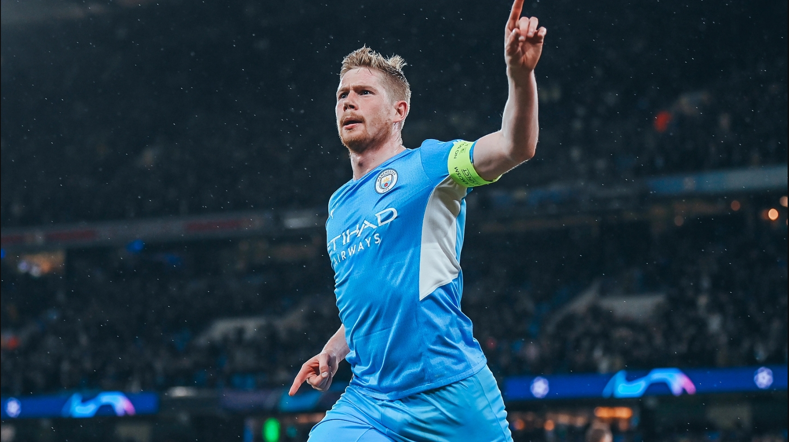
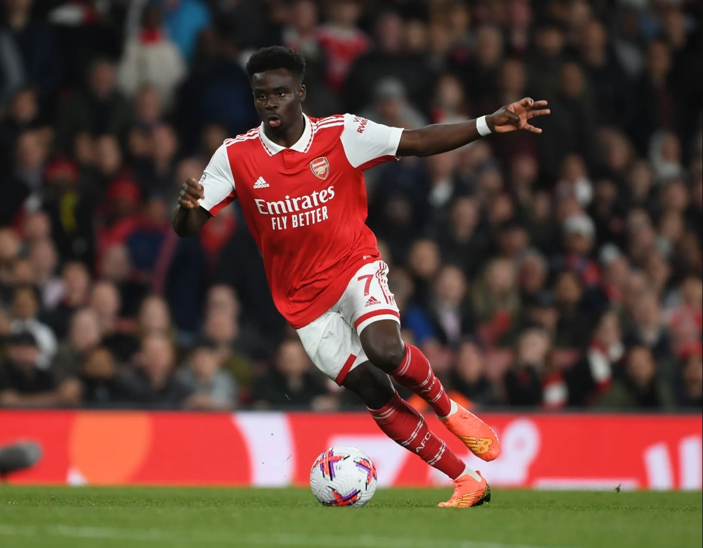
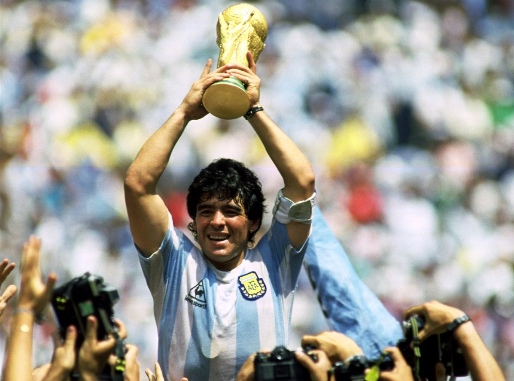
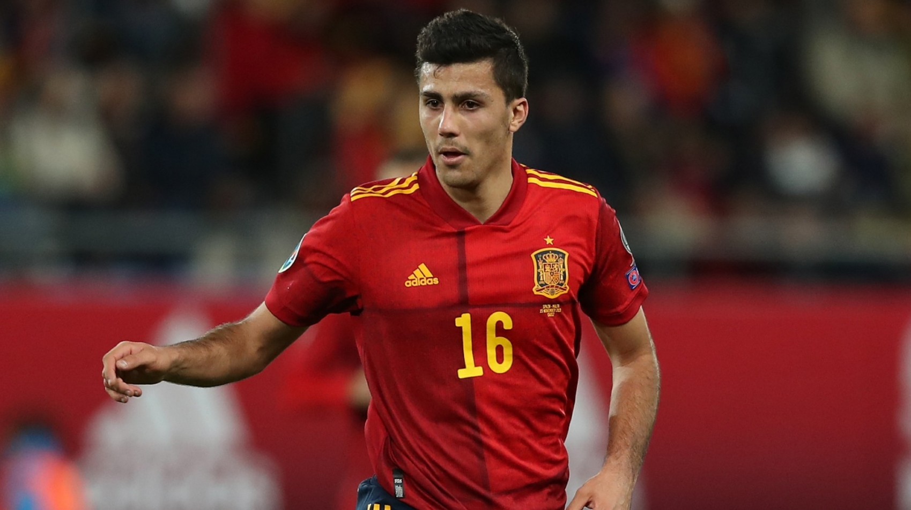

Midfield
I bet you're good on the ball!
Center Midfielder
What should you be doing as a center midfielder?
Good on the ball. Good passing. Take pressure from all sides, and make their way out of tight spaces.
Well known center midfielders
Some names you may recognize are:
- Paul Pogba
- Yaya Toure
- Luca Modric
- Frank Lampard
- Kevin de Bruyne

Left and Right Midfielder
What should you be doing as a left or right midfielder?
swinging passes. releasing pressure by moving out wide. combing with center midfielders to get the ball to the strikers.
Well known left and right midfielders
Some names you may recognize are:
- Bernardo Silva
- Xavi
- Eden Hazard
- Bukayo Saka

Center Attacking Midfielder
What should you be doing as a center attacking midfielder?
recieve in the middle and drive forward or swing out wide.
Well known center attacking midfielders
Some names you may recognize are:
- Rivaldo
- Johan Cruyff
- Zinedine Zidane
- Diego Maradona
- Florian Wirtz

Center Defensive Midfielder
What should you be doing as a center defensive midfielder?
keep the ball and help build out from the back
Well known
Some names you may recognize are:
- Rodri
- Joao Palhinha
- Granit Xhaka
- Aurelien Tchouameni
- Declan Rice
